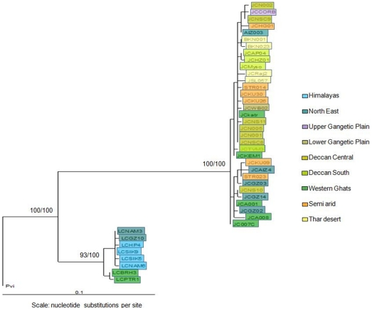
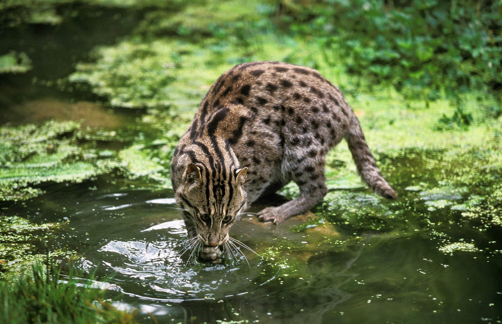
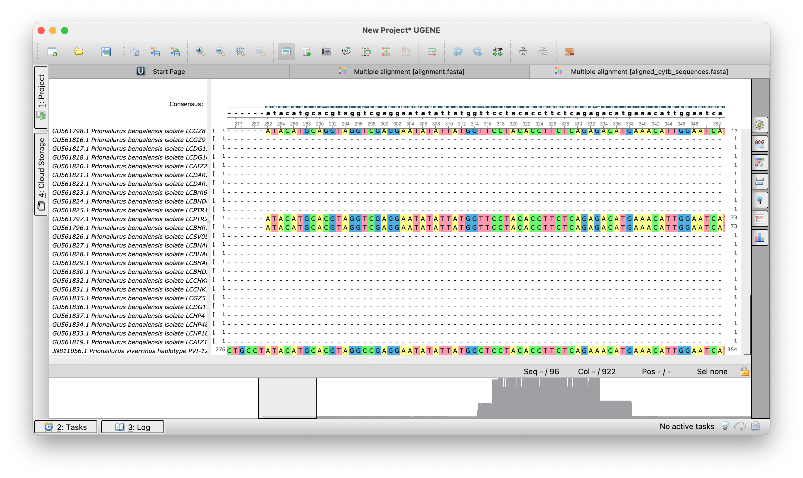
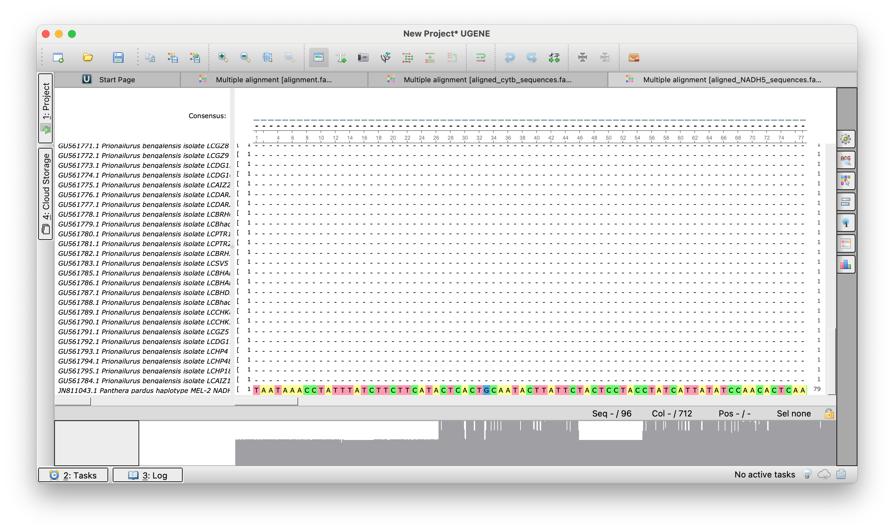
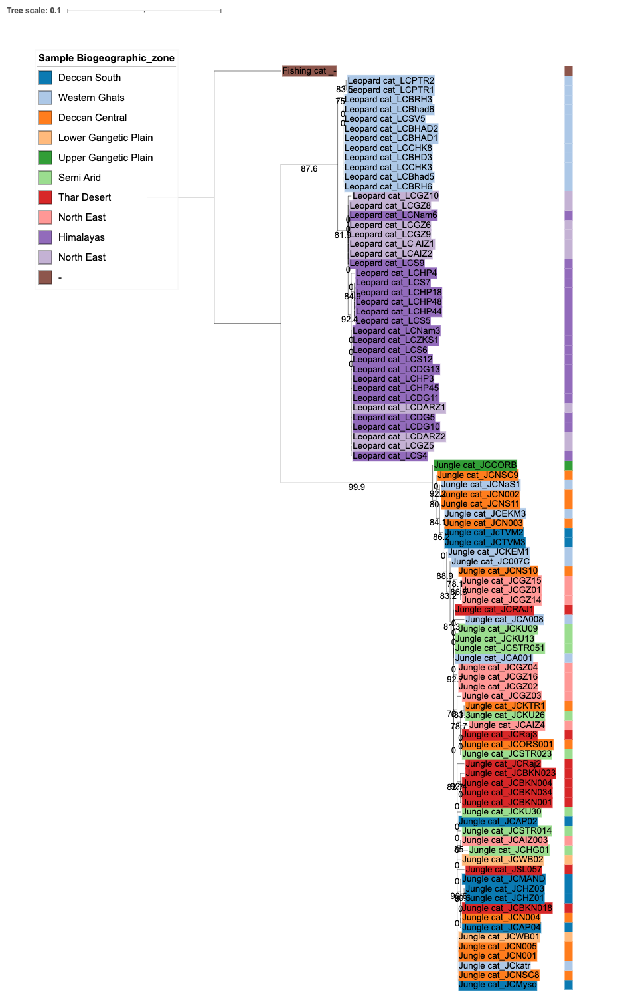

# Поиск и извлечение информации о последовательностях кошки-рыболова
(echo -e "AccessionVersion\tGi\tTitle\tOrganism\tTaxId\tSlen\tMolType\tTopology\tBiomol\tCreateDate"
esearch -db nucleotide -query "Prionailurus viverrinus and (cytb or NADH5) not predicted" | \
efetch -format docsum | \
xtract -pattern DocumentSummary \
-element AccessionVersion Gi \
-element Title \
-element Organism TaxId \
-element Slen MolType Topology Biomol \
-element CreateDate) | column -t -s $'\t' | sort -k44 Выполнение домашнего задания по филогенетике
Сравнительная филогеография кошачьих Индии: повторный анализ данных
Цель работы: воспроизвести филогенетический анализ из статьи Mukherjee et al. (2010) “Ecology Driving Genetic Variation: A Comparative Phylogeography of Jungle Cat (Felis chaus) and Leopard Cat (Prionailurus bengalensis) in India” (Mukherjee et al. 2010)

4.1 Объекты исследования

4.2 Подготовка метаданных
Метаданные были получены из дополнительных материалов статьи с добавлением информации по внешней группе (Prionailurus viverrinus) из базы данных NCBI.
4.2.1 Поиск последовательностей для внешней группы
Для анализа были выбраны: - JN811043.1 (611 п.н.) для гена NADH5 - JN811056.1 (800 п.н.) для гена цитохрома b
4.2.2 Структура метаданных
# Просмотр структуры файла метаданных
head Phylogenetics_hw/metadata.tsv | column -t -s $'\t' ID Acc_NADH5 Acc_Cyt_b Species State Biogeographic_zone
JCTVM3 GU561646 GU561701 Jungle cat Trivandrum zoo, Kerala Deccan South
JCMyso GU561647 GU561702 Jungle cat Mysore zoo, Karnataka Deccan South
JCAP04 GU561648 GU561703 Jungle cat Andhra Pradesh (AP) Deccan South
JCAP02 GU561649 GU561704 Jungle cat AP Deccan South
JCA001 GU561650 GU561705 Jungle cat Kerala Western Ghats
JCA008 GU561651 GU561706 Jungle cat Kerala Western Ghats
JCEKM3 GU561652 GU561707 Jungle cat Kerala Western Ghats
JCKEM1 GU561653 GU561708 Jungle cat Kerala Western Ghats
JC007C GU561654 GU561709 Jungle cat Kerala Western Ghats# Анализ состава выборки по видам
import pandas as pd
meta = pd.read_csv('Phylogenetics_hw/metadata.tsv', sep='\t')
print("Распределение по видам:")Распределение по видам:print(meta.Species.value_counts())Species
Jungle cat 55
Leopard cat 40
Fishing cat 1
Name: count, dtype: int64# Географическое распределение образцов
print("\nРаспределение по биогеографическим зонам:")
Распределение по биогеографическим зонам:print(meta.Biogeographic_zone.value_counts())Biogeographic_zone
Western Ghats 19
Himalayas 19
Deccan Central 11
North East 9
Thar Desert 9
North East 9
Deccan South 8
Semi Arid 8
Lower Gangetic Plain 2
Upper Gangetic Plain 1
- 1
Name: count, dtype: int644.3 Загрузка последовательностей из NCBI
Последовательности двух генов были загружены отдельно для последующего объединенного анализа.
# Загрузка последовательностей цитохрома b и NADH5
> Phylogenetics_hw/cytb_sequences.fasta
> Phylogenetics_hw/NADH5_sequences.fasta
tail -n +2 metadata.tsv | \
while IFS=$'\t' read -r line; do
IFS=$'\t' read -ra cols <<< "$line"
NADH5_acc=${cols[1]}
cytb_acc=${cols[2]}
[ -z "$cytb_acc" ] && continue
echo "Загрузка последовательностей: $NADH5_acc (NADH5) и $cytb_acc (cytb)"
efetch -db nucleotide -id "$cytb_acc" -format fasta >> Phylogenetics_hw/cytb_sequences.fasta
echo '' >> Phylogenetics_hw/cytb_sequences.fasta
efetch -db nucleotide -id "$NADH5_acc" -format fasta >> Phylogenetics_hw/NADH5_sequences.fasta
echo '' >> Phylogenetics_hw/NADH5_sequences.fasta
done4.4 Множественное выравнивание
Для каждого гена было выполнено независимое выравнивание с использованием MAFFT.
# Множественное выравнивание последовательностей
mafft --auto --thread -1 Phylogenetics_hw/cytb_sequences.fasta > Phylogenetics_hw/cytb_sequences.align.fasta
mafft --auto --thread -1 Phylogenetics_hw/NADH5_sequences.fasta > Phylogenetics_hw/NADH5_sequences.align.fasta 

4.4.1 Обрезка неинформативных участков
Для удаления плохо выровненных концевых регионов использовалась программа BMGE.
# Обрезка выравниваний
BMGE -i Phylogenetics_hw/cytb_sequences.align.fasta -t AA -m BLOSUM30 -of Phylogenetics_hw/cytb_sequences.align.trim.fasta
BMGE -i Phylogenetics_hw/NADH5_sequences.align.fasta -t AA -m BLOSUM30 -of Phylogenetics_hw/NADH5_sequences.align.trim.fasta Amino acid sequence alignment cytb_sequences.align.fasta
before : 96 sequences / 922 characters
0.00%
10.85%
21.69%
32.54%
43.38%
54.23%
65.08%
75.92%
86.77%
97.61%
after : 96 sequences / 141 characters
after : 96 sequences / 141 characters
Amino acid sequence alignment NADH5_sequences.align.fasta
before : 96 sequences / 712 characters
0.00%
14.04%
28.09%
42.13%
56.18%
70.22%
84.27%
98.31%
after : 96 sequences / 362 characters
after : 96 sequences / 362 charactersРезультат: получены выравнивания длиной, сопоставимой с оригинальным исследованием (303 п.н. для NADH5, 141 п.н. для cytb).
4.5 Конкатенация последовательностей
Для филогенетического анализа последовательности двух генов были объединены.
# Объединение последовательностей двух генов
mkdir -p Phylogenetics_hw/tree_files
# Извлечение заголовков
grep "^>" Phylogenetics_hw/cytb_sequences.align.trim.fasta | cut -d' ' -f1 > Phylogenetics_hw/headers.txt
# Извлечение и объединение последовательностей
grep -v "^>" Phylogenetics_hw/cytb_sequences.align.trim.fasta > Phylogenetics_hw/cytb_seqs.txt
grep -v "^>" Phylogenetics_hw/NADH5_sequences.align.trim.fasta > Phylogenetics_hw/nadh5_seqs.txt
paste Phylogenetics_hw/cytb_seqs.txt nadh5_seqs.txt | tr -d '\t' > Phylogenetics_hw/sequences.txt
# Создание финального файла
paste -d '\n' Phylogenetics_hw/headers.txt Phylogenetics_hw/sequences.txt > Phylogenetics_hw/tree_files/concatenated_sequences.fasta
# Очистка временных файлов
rm Phylogenetics_hw/headers.txt Phylogenetics_hw/cytb_seqs.txt Phylogenetics_hw/nadh5_seqs.txt Phylogenetics_hw/sequences.txt4.6 Построение филогенетического дерева
Филогенетический анализ выполнен с использованием IQ-TREE с оценкой поддержки узлов.
# Построение дерева максимального правдоподобия
cd Phylogenetics_hw/tree_files
iqtree -m TEST -s concatenated_sequences.fasta -bb 1000 -alrt 1000 -pre Cats_tree -redo
cd -4.7 Визуализация и аннотация дерева
Для визуализации дерева в iTOL были подготовлены файлы аннотаций.
import pandas as pd
import matplotlib.cm as cm
import matplotlib.colors as mcolors
from Bio import Phylo
# Загрузка данных
meta = pd.read_csv('Phylogenetics_hw/metadata.tsv', sep='\t')
tree = Phylo.read('Phylogenetics_hw/tree_files/Cats_tree.treefile', 'newick')
tips = [t.name for t in tree.get_terminals()]
# Назначение цветов по биогеографическим зонам
states = meta['Biogeographic_zone'].unique()
cmap = cm.get_cmap('tab20')
state_to_color = dict(zip(states, [mcolors.rgb2hex(cmap(i)) for i in range(len(states))]))
meta['color'] = meta['Biogeographic_zone'].map(state_to_color)
# Подготовка словарей для аннотаций
meta['specie_id'] = meta['Species'] + '_' + meta['ID'].astype(str)
acc_clean = meta['Acc_Cyt_b'].str.split('.').str[0].str.strip()
tip_to_label = dict(zip(acc_clean, meta['specie_id']))
tip_to_color = dict(zip(acc_clean, meta['color']))
# Файл читаемых меток
with open('Phylogenetics_hw/tree_files/labels.txt', 'w') as f:
f.write('LABELS\nSEPARATOR COMMA\nDATA\n')
for tip in tips:
clean_tip = tip.split('.')[0]
f.write(f"{tip},{tip_to_label.get(clean_tip, tip)}\n")
# Файл цветов фона меток
with open('Phylogenetics_hw/tree_files/color_labels.txt', 'w') as f:
f.write('TREE_COLORS\nSEPARATOR COMMA\nDATA\n')
for tip in tips:
clean_tip = tip.split('.')[0]
f.write(f"{tip},label_background,{tip_to_color.get(clean_tip, '#CCCCCC')}\n")
# Цветовая полоса по биогеографическим зонам
unique_states = meta[['Biogeographic_zone', 'color']].drop_duplicates()
with open('Phylogenetics_hw/tree_files/colorstrip_groups.txt', 'w') as f:
f.write(f"""DATASET_COLORSTRIP
SEPARATOR COMMA
DATASET_LABEL,Biogeographic zones
COLOR,#000000
LEGEND_TITLE,Biogeographic Zone
LEGEND_SHAPES,{",".join(["1"]*len(unique_states))}
LEGEND_COLORS,{",".join(unique_states["color"])}
LEGEND_LABELS,{",".join(unique_states["Biogeographic_zone"])}
DATA
""")
for tip in tips:
clean_tip = tip.split('.')[0]
f.write(f"{tip},{tip_to_color.get(clean_tip, '#CCCCCC')}\n")4.8 Результаты
4.8.1 Визуализация филогенетического дерева

4.8.2 Основные выводы
Видовое разделение: Леопардовые кошки (Prionailurus bengalensis) образуют четко отделенный кластер от болотных рысей (Felis chaus), что подтверждает, что подтверждает их различия
Географический паттерн: Особи леопардовых кошек демонстрируют более выраженную географическую структуру по сравнению с болотными рысями, что может указывать на различия в истории популяций и расселении.
Статистическая поддержка: Высокие значения бутстреп-поддержки (>75%) для большинства узлов свидетельствуют о надежности полученной топологии дерева.
Выполнила: Флоренская Лидия
Mukherjee, Shomita, Anand Krishnan, Krishnapriya Tamma, Chandrima Home, Navya R, Sonia Joseph, Arundhati Das, and Uma Ramakrishnan. 2010. “Ecology Driving Genetic Variation: A Comparative Phylogeography of Jungle Cat (Felis Chaus) and Leopard Cat (Prionailurus Bengalensis) in India.” Edited by William J. Murphy. PLoS ONE 5 (10): e13724. https://doi.org/10.1371/journal.pone.0013724.